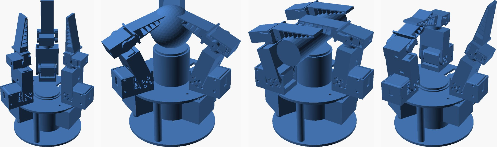
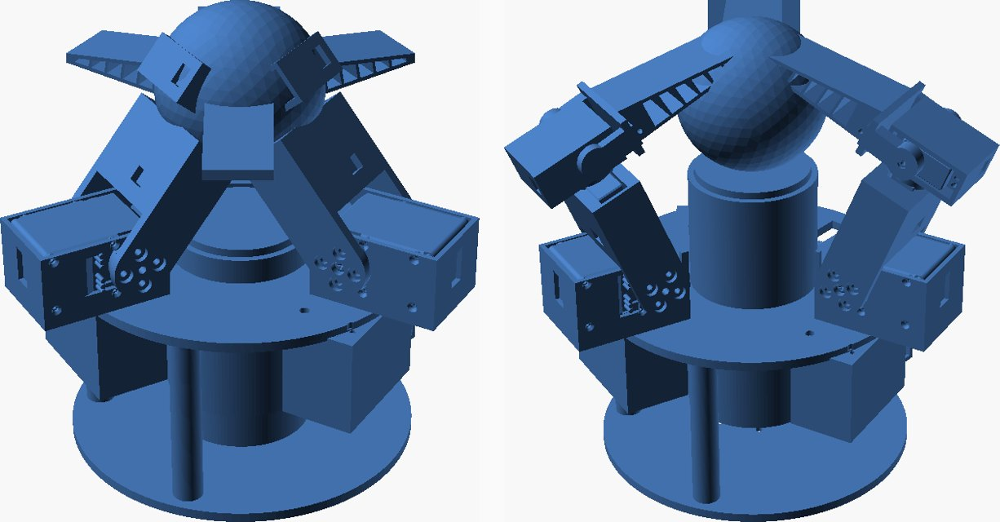
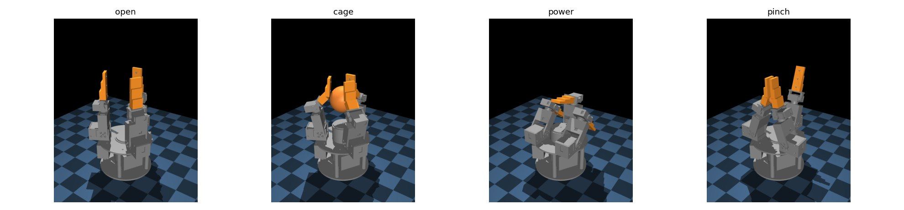
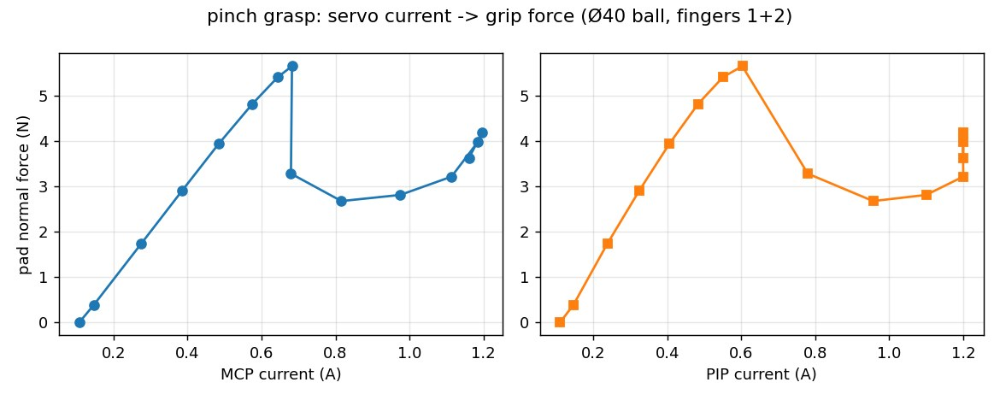
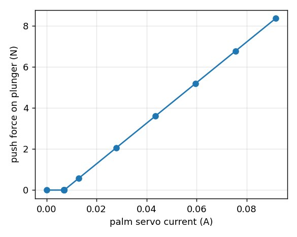

We took a gripper out of a paper and had a printable, verified, simulated version of it by the end of the day. The paper is Zhou et al.'s VTAP Gripper (IROS 2026): three identical four-degree-of-freedom fingers around a palm that slides in and out on a linear actuator, TPU Fin-Ray fingertips, and a bimodal camera-plus-gel sensor in the palm. Thirteen actuated axes. The authors built it on Dynamixel dual-axis servos and an Actuonix linear actuator. We wanted the same architecture on the parts we already stock, Feetech STS3215 and STS3032 bus servos, so we could test the paper's cage / power / pinch reconfiguration and its finger-palm synergy ourselves.
This post is about what "one-shotting a design from a paper" actually looked like, because the honest version is more interesting than the headline. The kinematics, the layout and all eleven printed parts came out of the first pass and assembled without a single hand-placed transform. Then the verify stage found nine things wrong with them, and the simulation found a grasp behaviour the paper describes as a feature and we had to treat as a requirement. None of that needed a print. That is the point of the loop.

01 / Read the paper, measure the parts, decide the three things a paper can't decide
A paper gives you a kinematic chain, joint ranges and a photo. Equation (2) of this one is a chain of four mutually orthogonal revolutes per finger: a swivel about the palm normal (±60°) that reconfigures the hand between cage, power and pinch, an MCP flexion (−25 to +90°), a roll of the distal segment (±55°) that the authors use for in-hand singulation, and a PIP flexion. Link lengths are not given, so we chose them from the servos. The rest is an ordinary parametric build: one params.py holds the servo geometry, the layout, every pocket and the chain itself; each part is a build123d script with its own watertight and envelope checks; the assembly places every part through the same forward kinematics that the simulation later uses.
Two things had to be measured, not read. The STS3215's flange holes, horn and rear idler cap came out of the SO-ARM100 STEP model. The STS3032 has no published mechanical drawing at all, so we pulled Feetech's own Pro/E model off a parts site, sectioned it, and found its ears sit 7 mm below the output face with four Ø2 holes on a 28 × 8 mm grid, and its output is a bare 25-tooth spline with an M2 hole down the middle. Our printed hubs press onto that spline. That is the riskiest assumption in the build and it says so in the README.
Three decisions no paper can make for you were made up front: which actuators (STS3215 ×2 at each finger base, STS3032 ×2 distal, which mirrors the paper's heavy-base / light-distal split), how much of the palm to build now (an actuated, sensor-ready palm with a plain pad; the gel sensor is its own project), and what it mounts to (the SO-101 wrist, accepting about 1.1 kg on it). The palm drive is a printed rack and pinion rather than a lead screw on purpose: a lead screw would hold a plunger press with zero current, and we want palm contact force readable from the palm servo.
02 / What the first pass got right
The structure held. Eleven parts, all watertight on the first build: a swivel bracket that bolts to the base servo's horn and runs a boss in the plate hole so the horn only carries torque; a proximal link that is a clevis on the MCP servo's horn and rear cap and pockets the roll servo; a roll cradle that presses onto the spline, runs a printed journal in the link, and pockets the PIP servo; a tip hub on the PIP spline with a pivot pin on the far side; the Fin-Ray; a base frame that prints upside down with three servo bays, the palm servo bay and a slotted guide sleeve; a lower plate with the arm mount; the palm tube with its rack fin; a puck; a pad; a pinion. The first assembly render looked like the photo in the paper.

What a first pass cannot do is know where two parts touch through a joint's whole range, or which of the paper's joint limits survive contact with your own servos. That is what the next two stages are for.
03 / What verify caught (nine defects, zero prints)
The verify stage places every printed part and every servo envelope in each pose and at the joint-limit corners and reports exact overlap volume per pair. Then it runs the DfAM wall and overhang check on every STL. This is the stage we added to our loop after the paper-to-assembly study, and it earned its keep again:
- The roll cradle's flange rode 0.8 mm into the link's journal ring. 121 mm³.
- The tip hub's crossbar started 13.5 mm from the PIP axis; the cradle pocket's corner is 15 mm from it. At 74° of flexion they met. Crossbar moved to 16 mm.
- The same crossbar swings into the pocket's back at −45°. The paper's PIP goes to −60°; ours stops at −30°, and the README says why.
- The frame's columns were sunk half a millimetre into the lower plate.
- The pinion's tooth phase against the rack: 46 mm³ of tooth-on-tooth. A tooth is now centred on the pinion axis, the pinion turns with the stroke in the assembly, and the rack got 0.1 mm of backlash.
- The link's rear boss clashed with the MCP servo's rear connectors at every angle but zero, because the boss rotates with the link and the connectors don't. Boss shrunk to Ø18, which the sectioned STEP says clears them by 2 mm.
- A 0.4 mm sliver of PLA above the swivel's cheek holes. The cheeks are now open-topped forks.
- The tip hub's M2 head recess broke through into its spline bore, leaving the screw nothing to clamp. Arm thickened to 6 mm.
- The link body clipped the swivel cheek at −25° of MCP hyperextension. Crossbar raised 3 mm.
And one that is a design fact rather than a defect: the link's underside sits 11.5 mm below the MCP axis because that is the radius of the STS3215's horn. With the palm face 10 mm above the plate, a fully flexed finger went through it. The MCP axis moved up to 21 mm and the retracted palm down to 2 mm. Every one of these is a number in params.py, so the fix was an edit and a re-run, and the render log shows the design walking through them.
Verify also produces a self-collision envelope that it reports but does not fail: three fingers at 90° of MCP meet at the centre, a finger folded flat with its tip folded goes into the retracted palm, and a flexed finger whose tip is rolled 30° and bent 45° sweeps into an upright neighbour's fingertip. Any hand this size has those corners. What the check gives you is their exact location, so the controller can stay out of them, and a passing result over the working range: the three modes, the swivel sweeps, every single-finger corner, and the paper's singulation move with the two pinching fingers rolled in opposite directions around a bead.
04 / What the simulation found
The MuJoCo model is built from the same parameters, and its forward kinematics match the CAD's to 0.00 mm. Thirteen position servos with stall-torque limits, a three-segment compliant Fin-Ray per finger, the palm as a slide, and servo current defined as actuator torque divided by the motor constant. Its first lesson was about MuJoCo, not the hand: mesh collisions there use convex hulls, which fills every pocket and the guide sleeve with solid and crushes whatever sits inside. Collisions are now primitives derived from the same numbers; the meshes are visual with exact inertia.

The second lesson was the paper's thesis coming back as a constraint. A Ø40 ball resting on the retracted palm cannot be grasped by these fingers at all: the PIP axis tops out about 91 mm above the plate and the fingertips reach down to a horizontal lid at best, so they close over the ball without touching its sides. The paper presents the actuated palm as a way to redistribute contact for in-hand manipulation. On our geometry it is the only way small objects get into the fingers' workspace. The grasp protocol now lifts the object to about 75 mm before the fingers close, and with that every trial in the sweep holds after the hand is turned to point down:
| mode | object | palm lift | contact per finger (N) | held | pull-out (N) |
|---|---|---|---|---|---|
| cage | Ø40 sphere | 50 mm | 2.9 / 2.8 / 2.8 | yes | 30 |
| cage | Ø65 sphere | 37.5 mm | 6.4 / 6.7 / 6.4 | yes | 29 |
| cage | 50 mm cube | 45 mm | 6.1 / 6.7 / 5.0 | yes | 30 |
| power | Ø40 rod across the palm | 50 mm | 4.0 / 4.6 / 4.4 | yes | 23.5 |
| power | Ø65 sphere | 37.5 mm | 3.7 / 7.3 / 6.9 | yes | 17.5 |
| power | 50 mm cube | 45 mm | 3.5 / 0 / 0 | yes, pinned by one finger | 6.5 |
| pinch | Ø20 bead, in the air | 0 | 0 / 0.9 / 0.8 | yes | 11.5 |
| pinch | Ø40 sphere, in the air | 0 | 0 / 7.2 / 7.2 | yes | 17 |
The close law is the same one our soft hands use: go to a pre-grasp around the object, flex until each finger feels half a newton, then squeeze a fixed six degrees further so the servo pushes with its stiffness. The power grasp of the cube is honest about its weakness: the two parallel fingers straddle a 50 mm object and miss it, and only the opposing finger pins it to the palm.
Then the measurement we actually care about. Our slip-sensing paper argues that servo current is enough to know grip force and to catch a slip. Pinching a Ø40 ball between two fingers and stepping the squeeze one degree at a time, the pad force is linear in either servo's current up to seven degrees of squeeze, N = 9.95·IMCP − 0.99 with R² of 0.998. Past that the tilted fingertips squirt the ball: force falls from 5.7 N to 2.7 N while the MCP current keeps rising to stall. Current alone over-reads the grip once the tips slip, which is the same signature the one-finger bench was built to measure, now seen from a multi-joint hand.

The palm gives the same kind of answer with less drama. Driven into a spring-loaded plunger, its push force is linear in the palm servo's current at about 99 N per amp, so the paper's syringe-plunger move is readable from the palm servo alone. The fingertip workspace, sampled the way the paper's Figure 3 is, spans 282 × 281 × 239 mm against the paper's 469 × 477 × 311; our finger reach is 181 mm to their roughly 250.

05 / What "one-shot" means now
The first pass produced the design. The loop produced a design you could print. Between them sat two hours of a verify stage saying exactly which two solids overlap by how many cubic millimetres at which joint angle, and a simulation saying the palm is not optional. Neither of those is a thing you want to learn from a print, and on a hand with thirteen servos and eleven printed parts you would learn them one print at a time.
The skills are the reason this was a day. The part skill knows which boolean pitfalls cost hours; the machine skill insists every part be placed by a mate or a kinematic frame, never a hand-typed transform, which is why changing the MCP height was one number; the verify skill is a checklist that runs; the grasp-simulation skill carries the close law, the object fixture and the pull-out test from the last three hands. Every one of them was written down after it went wrong once. What is left before printing is in the README: check the STS3032 spline press on one hub, check the STS3215 flange holes against a real servo, and run the two servo voltages on separate rails.
The design, its verify log and the simulation live in our effector library (not yet public; the grasp-simulation skill it runs on is open at punkfab/effector-sim). The paper is Zhou et al., VTAP Gripper, arXiv:2607.15448. Have a mechanism in a paper that you'd like to hold? Start a project →